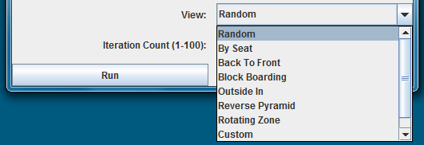
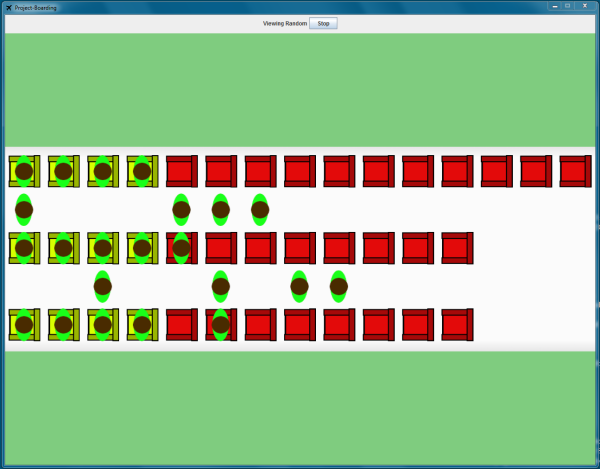

Once the user presses run the simulation will appear. For the simulation you are able to set the number of iterations that occour to give a more relyable result
You are also able to select which visualisation you would like to see on the screen.

These options change what simulation is shown and you are able to turn of the simulation if required.
Finally once a visualisation is selected and the 'Run' button is pressed you will be presented with the simulation screen

The simulation screen will show the passengers boarding the plane. You can cancel the simulation as well by pressing the 'Cancel' button or by quiting the window.
Once the simulation has completed running you will be presented with the results screen.